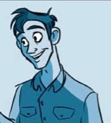
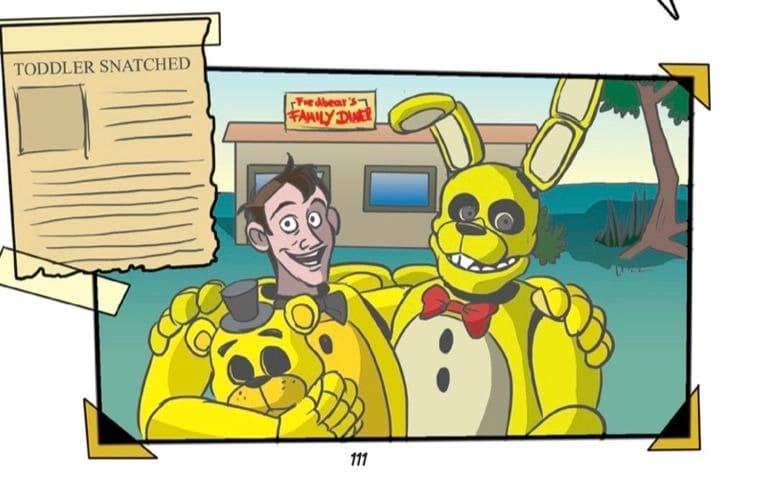

<!DOCTYPE html>
<html lang="es">
<head>
    <meta charset="UTF-8">
    <meta name="viewport" content="width=device-width, initial-scale=1.0">
    <title>Freddy Fazbear's Pizza - Sobrevive</title>
    
    <style>
        /* Ajustar el tamaño de las imágenes dentro de la sección */
        .imagen-seccion img {
            width: 500px;  /* Puedes ajustar este valor según lo que necesites */
            height: auto;  /* Mantener la proporción */
            display: block; /* Asegura que la imagen sea bloque */
            margin: 0 auto; /* Centrar la imagen */
        }

        /* Si necesitas que el contenedor también sea más grande */
        .imagen-seccion {
            flex: 0 0 auto; /* Evita que el contenedor se reduzca */
            margin-left: 20px;
            width: 500px; /* Puedes ajustar este valor según lo necesites */
            position: relative; /* Importante para superponer las imágenes */
        }

        * {
            margin: 0;
            padding: 0;
            box-sizing: border-box;
        }

        body {
            font-family: 'Courier New', Courier, monospace;
            background-color: #000;
            color: #fff;
            line-height: 1.6;
            background-image: url('../imagenes/fondo.jpg');
            background-size: cover;
            background-attachment: fixed;
        }

        header img {
            width: 500px;
            height: auto;
            display: block;
            margin: 0 auto;
            animation: EntrarDesdeIzq 1s ease-out forwards; 
        }

        header {
            background-color: #600000;
            color: white;
            padding: 10px 0;
            text-align: center;
            border-bottom: 2px solid #ff0000;
        }

        header h1 {
            font-size: 2.5em;
            margin: 0;
            text-shadow: 2px 2px 5px #ff0000;
        }

        #contenido {
            display: flex;
            justify-content: center;
            align-items: center;
            color: white;
        }

        .contenido-seccion {
            display: flex;
            flex-direction: column;
            background-image: url('../imagenes/fondo.jpg');
            background-size: auto;
            background-repeat: repeat;
            background-position: top left;
            padding: 20px;
            color: white;
            background-color: rgba(0, 0, 0, 0.5);
            margin-bottom: 20px;
        }

        .contenido-seccion .seccion {
            display: flex;
            align-items: flex-start;
            margin-bottom: 20px;
        }

        .contenido-seccion .seccion .texto-seccion {
            flex: 1;
            background-color: rgba(0, 0, 0, 0.7);
            padding: 10px;
        }

        .contenido-seccion .seccion .imagen-seccion {
            flex: 0 0 200px;
            margin-left: 20px;
            position: relative; /* Importante para las imágenes superpuestas */
        }

        .contenido-seccion .seccion .imagen-seccion img {
            width: 100%;
            height: auto;
        }

        footer {
            background-color: #600000;
            color: white;
            text-align: center;
            padding: 10px 0;
            border-top: 2px solid #ff0000;
        }

        /* Estilo para las llamas */
        #llamasGif {
            width: 100%;
            height: auto;
            position: absolute;
            top: 0;
            left: 0;
            display: none; /* Oculto por defecto */
        }
    </style>

    <script>
        function mostrarHistoria() {
    document.getElementById("contenido").innerHTML = ` 
        <div class="contenido-seccion">
            <div class="seccion">
                <div class="texto-seccion">
                    <h3>Apariencia</h3>
                    <p>En los recuerdos de Charlie, se le ve usando muchas camisas de franela. Al ver que su cuerpo puede caber perfectamente dentro de Fredbear, se puede suponer que es alto.</p>
                    <p>En las adaptaciones gráficas de las novelas, Henry es representado con cabello castaño y vistiendo una camisa de franela de color claro junto con pantalones oscuros.</p>
                    <p>Sin embargo, en los juegos Henry no se ve ni se describe. Él, al igual que el Chico del Teléfono, es representado con un reproductor de casetes. En <i>Five Nights at Freddy's Character Encyclopedia</i> e <i>Into the Pit</i>, Henry tiene cabello rubio y barba, usa anteojos, una camisa a cuadros naranja, un overol de mezclilla azul y zapatos marrones.</p>
                </div>
                <div class="imagen-seccion">
                    
                    <p style="text-align: center; color: white;">Henry</p>
                </div>
            </div>

            <div class="seccion">
                <div class="texto-seccion">
                    <h3>Personalidad</h3>
                    <h4>Juegos</h4>
                    <p>En los juegos, Henry es un hombre de voz bastante suave, como lo demuestran sus grabaciones. Rara vez expresa algún indicio de emoción, excepto por condenar a William seguido de sentimentalismo cuando habla con su hija Charlotte en el Final Bueno, así como la decepción durante el Final Malo. También se muestra un poco dramático al hablar, debido a la gravedad de su situación.</p>
                    <p>En sus monólogos durante el Final Locura, se muestra que Henry es un hombre roto por dentro que se arrepiente inmensamente de todo lo que, sin saberlo, permitió que Afton hiciera. También se muestra que extraña profundamente a su hija y se arrepiente de no poder salvarla. Todos estos factores llevaron a Henry al punto en que quería suicidarse por arrepentimiento. Sin embargo, parece tener una voluntad fuerte, ya que se negó a morir hasta que intentó matar a William para ayudar a que las almas de los niños finalmente puedan descansar.</p>

                    <h4>Novelas</h4>
                    <p>No se sabe mucho sobre Henry, sin embargo, se sabe que se enorgullecía de su trabajo y era un genio mecánico. Henry tenía un profundo amor por su hija Charlie y usó sus habilidades para crear juguetes mecánicos para ella, como Theodoro, Stanley y Ella.</p>
                    <p>Se reveló que Henry estaba en duelo y había alcanzado un nivel de dolor, desesperación y agonía, evidenciado por su nota de suicidio a su hermana y los "recuerdos" de Charlotte en <i>The Fourth Closet</i>. Parecía aislado y terriblemente solo en su dolor que parecía desconectado de la realidad. Clay Burke observó que a menudo estaba tan absorto en su trabajo y que había algo extraño en él, "casi conmocionado", lo describió como agradable, pero terriblemente solo, con su dolor incluso visible a la distancia.</p>
                </div>
                <div class="imagen-seccion" style="position: relative; display: inline-block;">
                    <a href="Henry’s Speech.html" target="_blank" onclick="mostrarLlamas(event)">
                        
                        
                    </a>
                </div>
            </div>
        </div>
    `;
}


	

        // Función para mostrar las llamas y luego redirigir
        function mostrarLlamas(event) {
            event.preventDefault(); // Evita la redirección inmediata
            const llamas = document.getElementById("llamasGif");
            const img = document.getElementById("henryImg");

            // Mostrar las llamas
            llamas.style.display = "block";

            // Opcionalmente, cambiar la opacidad de la imagen de Henry
            img.style.opacity = 0.5;

            // Redirigir al enlace después de un pequeño retraso (500ms)
            setTimeout(function() {
                window.open(event.target.closest('a').href, '_blank'); // Abre el enlace en una nueva pestaña
            }, 500); // Redirigir después de medio segundo
        }
    </script>
</head>
<body onload="mostrarHistoria()">
    <header>
        
    </header>

    <div id="contenido">
        <!-- El contenido principal se carga aquí mediante JavaScript -->
    </div>

    <footer>
        <p>&copy; 2024 Freddy Fazbear's Pizza. Todos los derechos reservados.</p>
    </footer>
</body>
</html>
